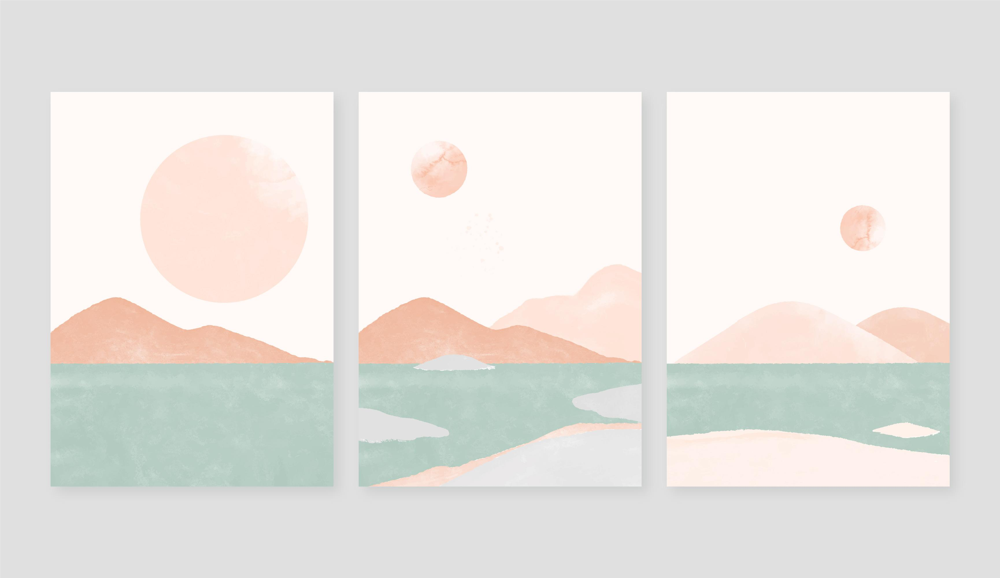
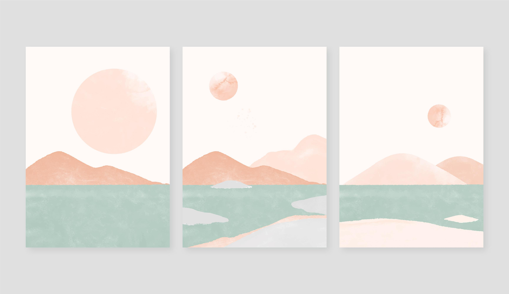

I'm a candidate for a BASc in Biomedical Engineering, and pursuing a specialization in Neural Engineering. I have a passion for 3D CAD Modelling, Coding, and Visual Design. I'm currently seeking new work opportunities and experiences to expand my skills and abilities.
My Work
Software and Programming
Software and Programming
Currently, I am exploring a new-found interest in coding. Here is an example of a script that I wrote using Python, which pulls data from the database of the Government of Ontario, organizing the data, and pushing the data to be displayed here. This script is automated and ran daily, updating the graph when new data is uploaded onto the government database.
(click and hover to view data)
3D CAD Software Work
I have experience in both SolidWorks and Onshape. I enjoy doing projects in both, and showcased below is a LEGO minifigure I planned and modelled from scratch in SolidWorks, and it was designed for functionality. Each part is posable as if it is a real LEGO
Having learned Onshape, I've developed the fundamental skills of working with 3D models, and with Onshape's built-in version management and collaborative tools, I've developed new expertise in CAD design.